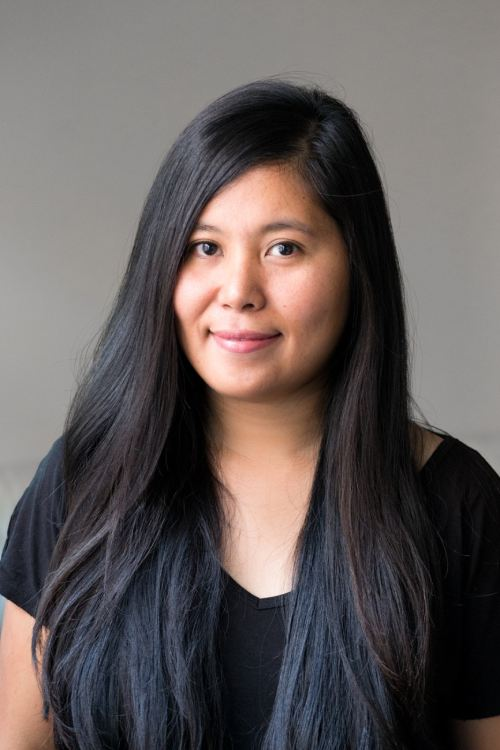

HI, I'M DIANNE RIVERA.
ABOUT ME
Hello! I'm Dianne, a dedicated Quality Assurance professional with a passion for ensuring excellence in every detail. With a meticulous eye and a commitment to maintaining the highest standards, I've spent years perfecting processes and ensuring that products and services meet and exceed expectations.
When I'm not immersed in quality assurance, you'll often find me exploring new destinations, savoring diverse cuisines, and experimenting with new recipes in the kitchen. I cherish moments of relaxation under the sun, especially on a beautiful beach where I can unwind and soak in the serenity.
I invite you to browse through my site to learn more about my professional journey and the adventures that bring joy to my life.
CORE VALUES THAT DRIVE MY WORK
THE PLACE I CALL HOME
While I currently reside in the vibrant city of Madrid, Spain, my heart and roots are firmly planted in the beautiful Philippines, where family and community are the core of my identity.
A Deep Connection to Home: The Philippines
The Philippines is where my journey began, a place rich in culture, tradition, and warm, welcoming people. Growing up in this tropical paradise, I learned the values of community, resilience, and family—values that continue to guide me in every aspect of my life. The Philippines is more than just a country to me; it’s where my heart belongs, a place that fills me with pride and inspiration.
Family: The Heart of My Life
For me, home is synonymous with family. My family has always been my rock, providing unwavering support, love, and encouragement. The strong family ties and the sense of belonging in the Philippines have deeply influenced my personal and professional life. This close-knit family environment has taught me the importance of collaboration, empathy, and nurturing relationships, which are essential in both personal growth and professional success
Embracing Life in Madrid
While my roots are in the Philippines, my journey has taken me to the bustling and beautiful city of Madrid, Spain. Living in Madrid has been an enriching experience, blending the vibrant, fast-paced energy of a major European capital with the warmth and hospitality reminiscent of home. The city's cultural diversity and dynamic lifestyle have broadened my horizons and fueled my creativity.
Bridging Cultures
My life is a beautiful fusion of the Philippines' rich traditions and the cosmopolitan flair of Madrid. This unique combination allows me to bring a diverse perspective to my work, enriching it with a global outlook and a deep appreciation for different cultures. Whether I’m working on a project or connecting with new people, I strive to blend the best of both worlds to create meaningful and impactful results.
INTERESTS
My interests reflect a deep appreciation for life’s simple yet profound pleasures. Cooking, traveling, eating, and basking in the sun are not just activities but essential parts of who I am. They allow me to connect with the world, nourish my body and soul, and cultivate a sense of happiness and fulfillment.
A Culinary Enthusiast
Cooking is my creative outlet and a way to connect with my cultural roots. I love experimenting in the kitchen, blending traditional recipes with modern twists to create dishes that are both comforting and exciting. Whether it’s preparing a hearty Filipino feast or trying my hand at Mediterranean delicacies, cooking allows me to express my creativity and share joy with others through delicious food.
A Passion for Travel
Traveling is more than just a hobby for me; it’s a way of life. I am driven by an insatiable curiosity to explore new destinations, immerse myself in different cultures, and discover the beauty of our world. From the bustling streets of Tokyo to the serene beaches of the Philippines, each journey enriches my perspective and fuels my love for adventure. Every trip is an opportunity to learn, grow, and collect memories that last a lifetime.
A Food Lover’s Adventure
As a true food lover, I believe that eating is one of life’s greatest pleasures. I relish the opportunity to try new foods and savor flavors from around the globe. From street food in Asia to fine dining in Europe, I embrace the culinary experiences that each destination offers. For me, every meal is an adventure and a chance to connect with the local culture and people.
Relaxing Under the Sun
There’s nothing quite like the feeling of warm sunshine on your skin and the gentle sound of waves lapping at the shore. I find immense joy in relaxing under the sun, whether it’s on a sandy beach, by a tranquil pool, or in a cozy garden. It’s my way of recharging and finding peace amidst the hustle and bustle of daily life. The sun’s warmth and light remind me of the importance of taking time to unwind and appreciate the simple, beautiful moments in life.
Get in Touch
I would love to hear from you! Whether you have a question, a project you’d like to discuss, or just want to say hello, feel free to reach out using the information below.